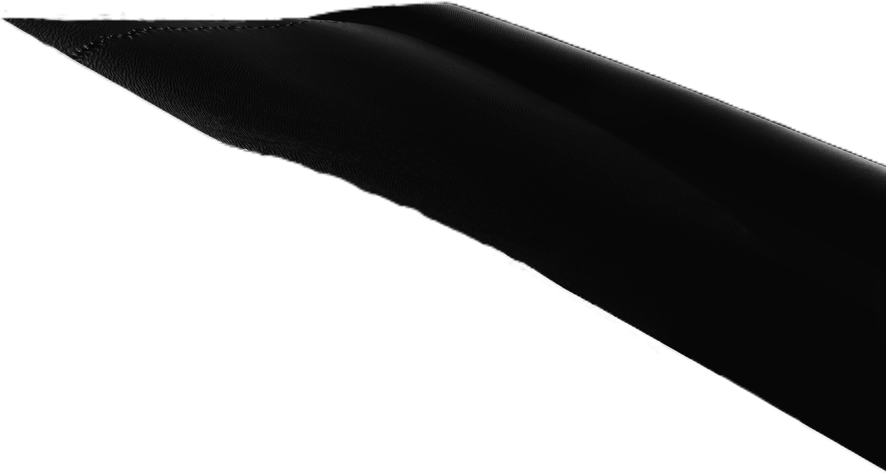
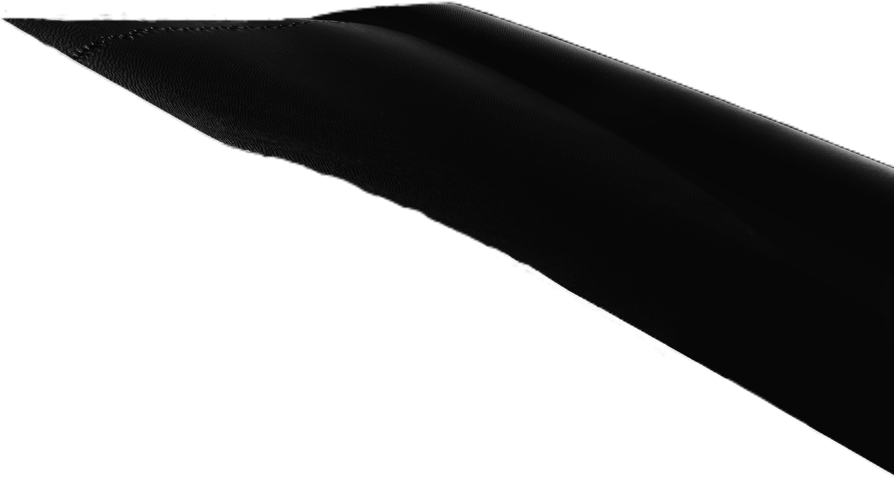
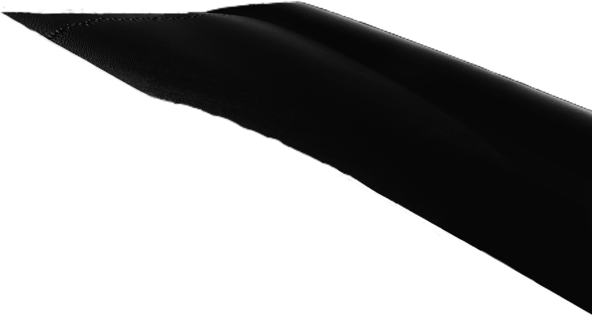
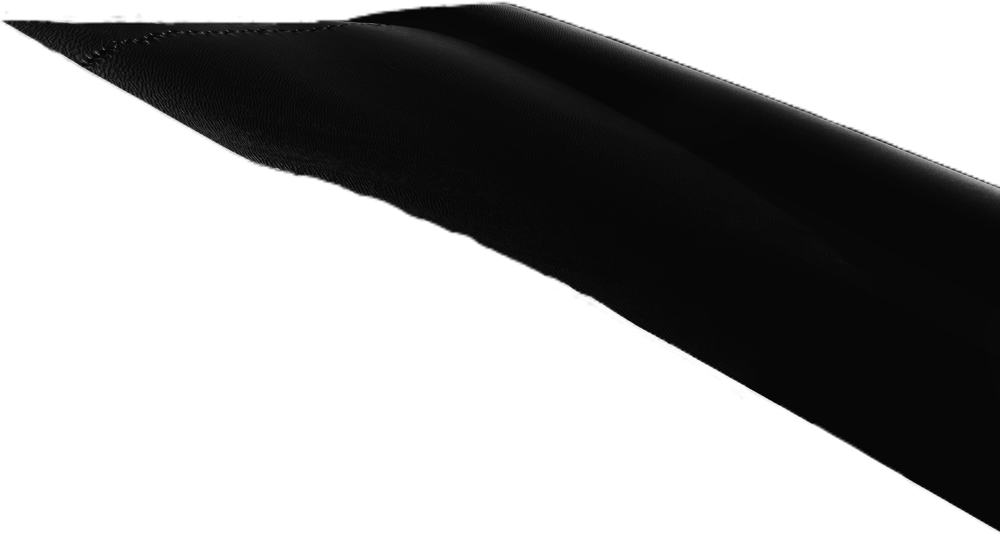

 

Daily improving his skills for Ethical Hacking career,
He can learn any skill, If it's Inspires him.
Meet a modern Renaissance man, a soul fueled by insatiable curiosity and an unquenchable thirst for knowledge. With a mind that danced across the realms of web designing, computer networking, programming, and the art of ethical hacking, he seemed to have the digital world at his fingertips.
By day, sculpting virtual landscapes, crafting elegant websites, and securing networks with the finesse of a master. But when the sun set, picking up pencils and brushes, allowing creativity to take tangible form on paper. Realistic drawings transporting viewers to worlds unseen, capturing the essence of both reality and imagination.
In the midst of digital and artistic adventures, pursuing another passion—photography. Through the lens of a camera, telling stories, freezing moments in time with a photographer's eye for detail and emotion.
Yet, in this world of technology and art, never neglecting the physical self. The hum of machines and the stroke of brushes complemented by the rhythmic beat of a heart during fitness routines. Believing that a healthy body was a canvas upon which a well-rounded life could be painted.
With each skill mastered, discovering new connections between the seemingly disparate realms of expertise. Curiosity was the bridge that linked passions, allowing the weaving of an intricate tapestry of creativity and knowledge, a testament to the endless possibilities that unfold when embracing the joy of learning.